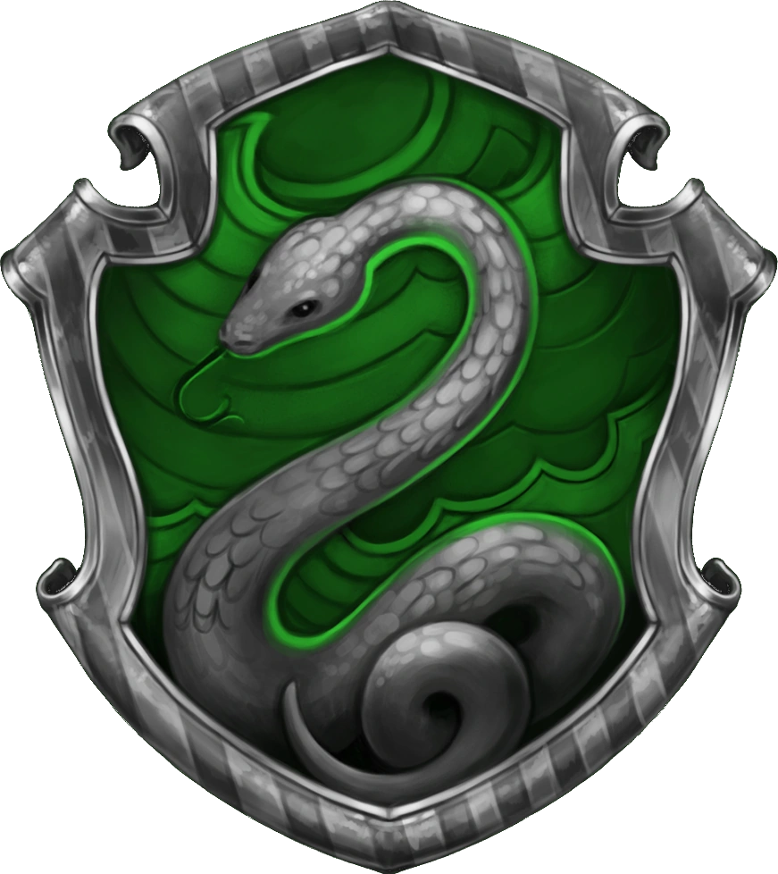
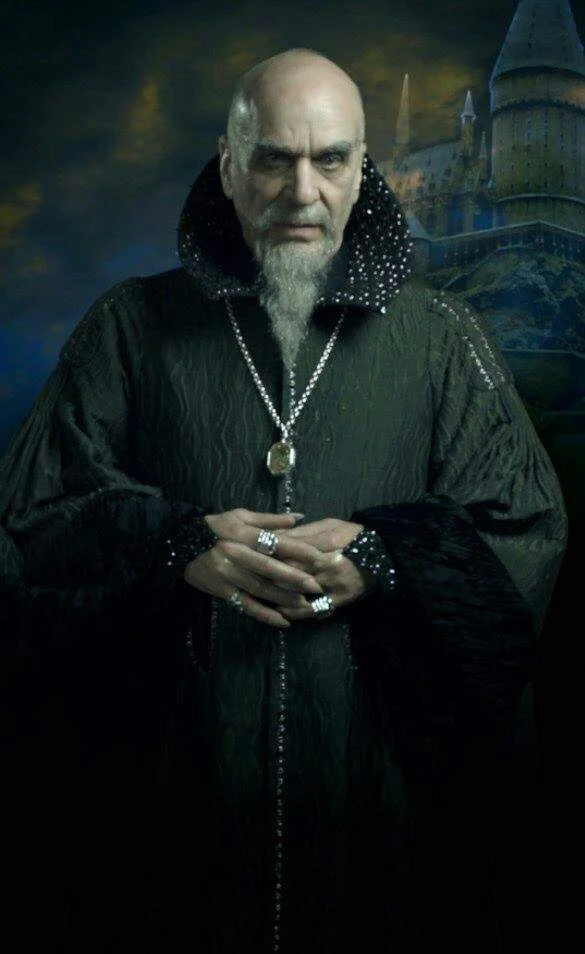
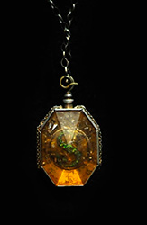

A Sonserina, fundada por Salazar Slytherin, é uma das quatro casas da Escola de Magia e Bruxaria de Hogwarts. Ao estabelecer a casa, Salazar instruiu o Chapéu Seletor a escolher somente alunos que obtivessem algumas de suas características particulares as quais ele prezava. Entre elas incluem a astúcia, desenvoltura, liderança e ambição. Vários membros da Sonserina possuem uma certa tendência em formar grupos, muitas vezes adquirindo líderes, o que exemplifica ainda mais as qualidades ambiciosas de Slytherin.
Salazar Slytherin
Salazar Slytherin foi um bruxo sangue puro nascido por volta de 976 e um dos Quatro Fundadores da Escola de Magia e Bruxaria de Hogwarts, sendo reconhecido por sua astúcia e determinação. Ele foi considerado um dos maiores bruxos de sua época, ao lado de seus colegas e fundadores da Escola, sendo respectivamente conhecido por ser ofidioglota e um habilidoso legilimente.Ele prezava por uma educação inteiramente mágica, desconsiderando a admissão de estudantes nascidos-trouxas em sua escola. No entanto, quando expressou sua opinião para os outros fundadores, Slytherin não obteve consenso completo. O que, em resposta, provocou sua saída do castelo.

Artefato mágico

O medalhão de Salazar Slytherin foi uma peça de joalheria originalmente pertencente ao fundador da Casa Sonserina que, após sua morte, veio a se tornar uma herança de família. Era um colar pesado com um S cravado com pedras em verde brilhante. Depois de passar pela família Slytherin, o medalhão veio para a posse da Casa Gaunt, fazendo com que Servolo Gaunt o estabelecesse como uma herança de uma linhagem inteiramente pura junto de um anel.
Corvinos

Helena

Sibila Trelawney

Quirinus Quirrell

Luna Lovegood

Gilderoy Lockhart

Garrick Olivaras

Filio Flitwick

Murta Que Geme

Padma Patil